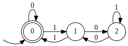
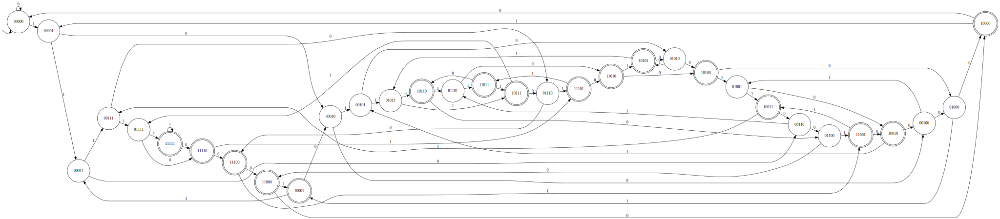
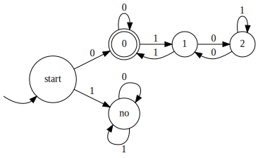

109.
Запишите регулярное выражения для слов над бинарным алфавитом, которые
представляют собой двоичную запись числа, кратного трем.

\(0^*((1(01^*0)^*1)^*0^*)^*\)
110.
Постройте детерминированный конечный автомат для языка слов над бинарным
алфавитом, в которых пятый символ с конца - единица.
Возьмем \(2^5\) вершин, каждой
сопоставлена двоичная строка длины \(5\). \(q_0=00000,\)\(\delta(s, bit)=(s << 1).set(5, bit)\)\(F=\{x : x_1 = 1\}\)

111.
Докажите, что любой детерминированный автомат для языка слов над
бинарным алфавитом, в которых \(k\)-й
символ с конца равен 0, содержит \(\Omega(2^k)\) состояний.
Докажем нижнюю оценку. \(a_1,a_2\ldots a_k,
b_1, b_2\ldots b_k : q=\delta(\delta(\delta(s, a_1), a_2)\ldots
a_n)=\delta(\delta(\delta(s, b_1), b_2)\ldots b_n)\). Они
существуют, иначе все строки длины \(k\) мапятся в разные вершины \(\Rightarrow\) вершин \(\geq 2^k\). \(a_i\not=b_i\) по построению. \(i\not=1\), т.к. иначе \(q\) должно быть и принимающим, и нет. \(] a_i=1, b_i=0\). Допишем \(i-1\) нулей к строкам \(a\) и \(b\). Т.к. состояние было одинаковое, то
состояние от новых строк тоже одинаковое. Но одно из них должно быть не
принимающим, мы поели говна.
112.
Можно ли обобщить два предыдущих задания для любого размера алфавита
\(c\) следующим образом: построить
семейство языков, для которых будут существовать НКА, содержащий \(k\) состояний, но любые ДКА будут содержать
\(\Omega(c^k)\) состояний?
Для \(c>2\) нет, т.к. по
алгоритму Томпсона можно построить ДКА по НКА с \(2^k\) состояний. Для \(c=2\) верно (см. 111), для \(c=1\) тоже верно.
113.
Постройте конечный автомат для языка слов над бинарным алфавитом,
которые представляют собой развернутую двоичную запись чисел кратных 5
(сначала на вход подаются младшие разряды).
Реверснем ДКА из 96. Еще надо поменять местами входную ноду и
принимающие, но они совпадают.
114.
Постройте конечный автомат для языка слов над бинарным алфавитом,
которые представляют собой развернутую двоичную запись чисел кратных 6
(сначала на вход подаются младшие разряды).
if на то, что первый символ 0, дальше реверснутый ДКА на
делимость на 3.

115.
Предложите для заданного ДКА размера \(n\) алгоритм подсчета количества слов длины
\(d\) которые он допускает, за \(\mathcal O(dn)\).
Наивный ДП.
116.
Предложите для заданного ДКА размера \(n\) алгоритм подсчета количества слов длины
\(d\) которые он допускает, за \(\mathcal O(\log{(d)} \cdot poly(n))\) для
некоторого полинома \(poly\).
Матрица перехода \(M\), \(M^l[i, j]\) - число способов выйдя из \(i\) прийти в \(j\) за \(l\) шагов, поэтому искомое = \(\sum\limits_{i\in F} M^l[q_0, i]\).
\(M^l\) считается фастстепенью за
\(\mathcal O(\log{(d)} \cdot
poly(n))\)
117.
Предложите для заданного ДКА размера \(n\) алгоритм подсчета количества слов длины
не больше \(d\) которые он допускает,
за \(O(\log{(d)} \cdot poly(n))\) для
некоторого полинома \(poly\).
Добавим новое начальное состояние, из которого пути во все вершины, в
которые есть пути из \(q_0\).
118.
Петя строит автомат для конкатенации языков \(L_1\) и \(L_2\) из автоматов для этих языков.
Оказалось, что автомат для \(L_1\)
содержит только одно терминальное состояние и Петя просто объединил в
одно это состояние и начальное состояние автомата для \(L_2\). Всегда ли у Пети получится то, что
нужно?
Нет, потому что можно пойти \(A_1\to A_2\to
A_1\), что не то, что надо.
119.
Петя строит автомат для объединения языков \(L_1\) и \(L_2\) из автоматов для этих языков. Решив
сэкономить, Петя просто объединил в одно начальные состояния автоматов
для \(L_1\) и \(L_2\). Всегда ли у Пети получится то, что
нужно?
Нет, потому что можно пойти \(q_0\to A_1\to
q_0\to A_2\)
120.
Петя строит автомат для замыкания Клини языка \(L\). Решив сэкономить, Петя просто провёл
\(\varepsilon\)-переход из каждого
терминального состояния в начальное состояние, и сделал начальное
состояние также терминальным. Всегда ли у Пети получится то, что
нужно?
Нет, потому что можно пойти \(q_0\to
q_0\), не заходя в начальное терминальное состояние. Тогда для
языка \(0\) в замыкание подойдет \(1\).